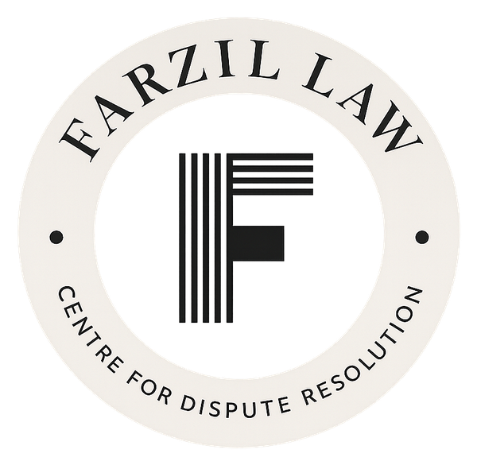

FARZIL LAW Centre for Dispute Resolution (FLCDR) is a dedicated Alternative Dispute Resolution practice within FARZIL LAW, focused on structured negotiation, mediation, and international commercial arbitration. We design and deliver dispute resolution processes that resolve complex commercial and civil disputes outside traditional court frameworks — efficiently, confidentially, and with our clients' long-term relationships in mind.
Our practice is guided by evidence-informed policy, procedural integrity, and accessible justice, combining deep subject knowledge in ADR with practical, technology-enabled dispute resolution frameworks.
What sets FLCDR apart in dispute resolution and ADR advisory
Structured negotiation and mediation processes for commercial and civil disputes, designed to preserve business and personal relationships while delivering swift resolution.
Representation and advisory in cross-border commercial arbitration, aligned with international standards and best practice under CIArb, WIPO, ICCA, and ABA frameworks.
Dispute-avoidance advisory for corporate transactions, contracts, and taxation matters, reducing the likelihood of litigation before it arises.
Resolution of IP and technology disputes through negotiated settlement, mediation, and arbitration frameworks.
Research-driven integration of AI and legal technology into dispute resolution frameworks, with published scholarship in an HEC-recognized policy journal.
Advisory on statutory compliance and governance matters, supporting judicial integrity and regulatory certainty for state and private entities.
Founder & Director, FLCDR | Associate Partner, FARZIL LAW
Accredited Mediator (IMI, CMC, SIMI‑Level 1), notified by the Ministry of Law and Justice, Government of Pakistan, in the official Gazette of Pakistan. Qualified Associate Arbitrator with Level 1 Accreditation from the Singapore International Mediation Institute (SIMI), and triple accreditation through ADR ODR International (IMI, CMC UK, SIMI).
Serves as Legal Representative at an autonomous organization under the Ministry of Interior, Government of Pakistan, appearing before the Hon'ble Lahore High Court — managing high-profile litigation and cross-departmental legal strategy. His scholarly research on integrating Artificial Intelligence into ADR frameworks is published in an HEC-recognized policy journal.
Member: Chartered Institute of Arbitrators (CIArb), WIPO, ICCA, American Bar Association (ABA).
in LinkedIn View full team profile →For mediation, arbitration, and ADR advisory inquiries